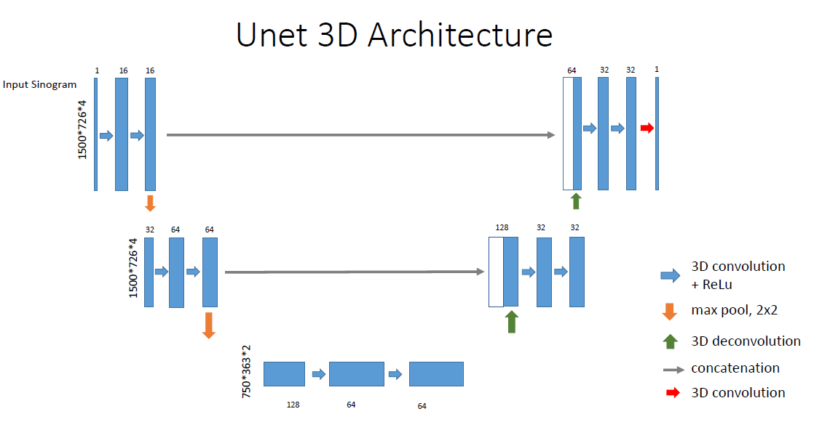
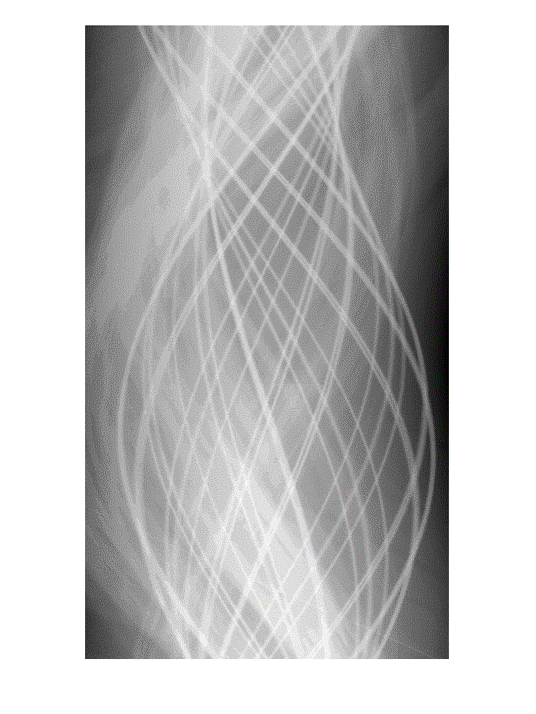
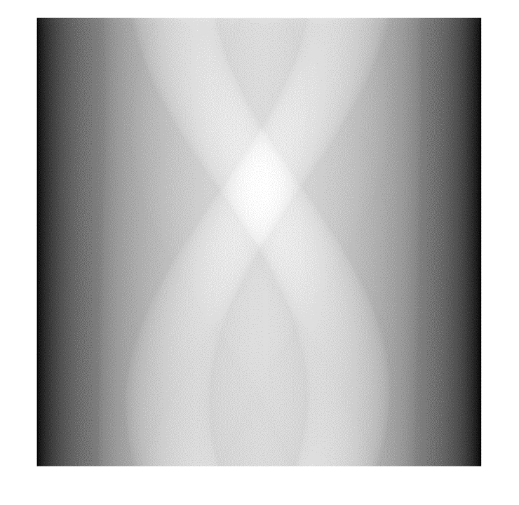
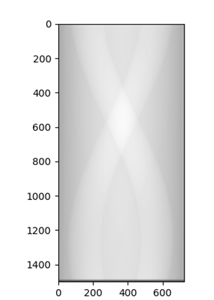
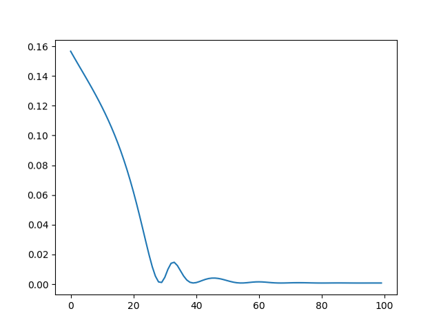
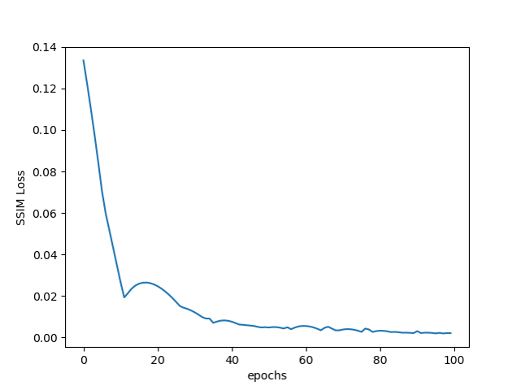

Sinogram Synthesis using Deep learning for Sparse CT Reconstruction
Swapnil VekhandeFall 2018 ECE 5554 Computer Vision: Class Project
Virginia Tech
Abstract
Computed tomography (CT) is a widely used medical imaging modality for showing anatomical structures such as lung and bones. But, the radiation dose could pose dangers of cancer to the patient. However, reducing radiation dose is inevitably leads to increased Signal-to-Noise ratio(SNR) causing misdiagnosis in CT images. In this project I propose Deep Learning to process Sparse CT projection data while preserving adequate image quality which could aid reducing radiation dose in CT imaging.Teaser figure


Introduction
Concerns about radiation dose with CT examination has also been increasing due to potential risk of cancers. Researchers are trying to preserve the quality of images with low dose. Analytical interpolation methods used for this have inherent limitation. On the other hand, neural networks are known for learning the distribution of grey scale intensities in image. Therefore, Effective interpolation of Sparse CT projection data while preserving adequate image quality could be achieve for CT imaging using UNET. Here, I have developed 2D Unet as well as 3D Unet for reconstruction of sparse up-sampled Sinograms. The 3D architecture is shared in Figure 2. In 2D Unet I am trying to get the local linear interpolation for various image patches of size 48 * 48.Approach
Analytical interpolation currently used in Medical Imaging is prone to errors. Recently Deep Learning based methods have shown lot of promise in interpolating the missing data [1]. In this project, we are applying state-of-the-art Convolutional Neural Network models to reconstruct full-view Sinogram from limited projection data. This is classical ill-posed inverse problem in imaging. We will be using FBP for final image reconstruction. We will be using Titan X GPU for accelerated processing of Tensorflow or Keras libraries.Experiments and results
We have this facility in the X-ray Systems lab of Biomedical Engineering and Applied Mechanics Department. We have the data gathered using the Xradia for various body parts. There are 1500 projections at various resolutions from -90 degrees to +90 degree. The projection data is first normalized and sinograms are created. The normalized data will be used for training the neural network. We plan to minimize loss functions like root mean square error. Once the model is trained we will test the model on sparse data which has missing projection data. The network is supposed to accurately predict the missing data. The final results will be compared with analytical interpolation methods as well as with the ground truth Training data was sparse up-sampled linearly interpolated sinogram as shown below.




Qualitative results
RMSE for output Sinogram is 0.3261437607563291. Images are noise free so Correlation coefficient is same as SNR=0.84917601 The loss functions L2-norm ans structural similarity behaved as follows:-


Conclusion and Future Work
I am still trying to rectify the results for UNet 3D. At the same time I am working to get the 2D Unet patch predictions correct. I will continue working on the same over the next semester.References
[1]Deep-neural-network based sinogram synthesis for sparse-view CT image reconstructionLee, Presentation